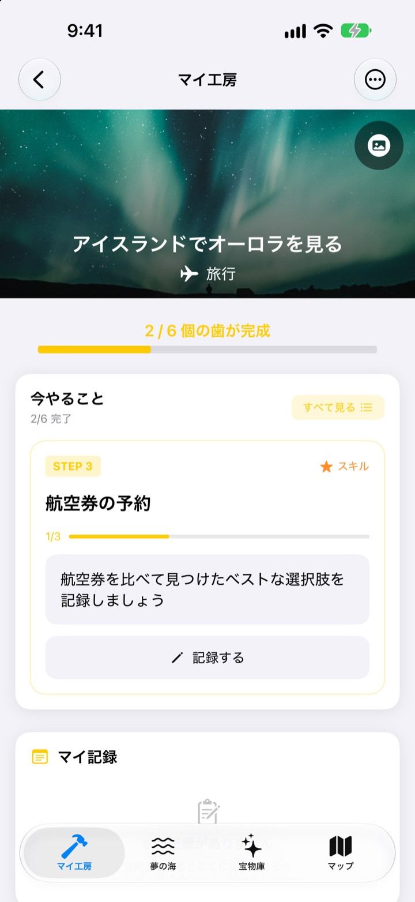
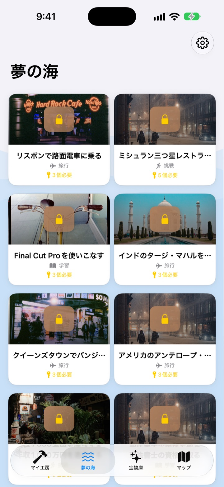
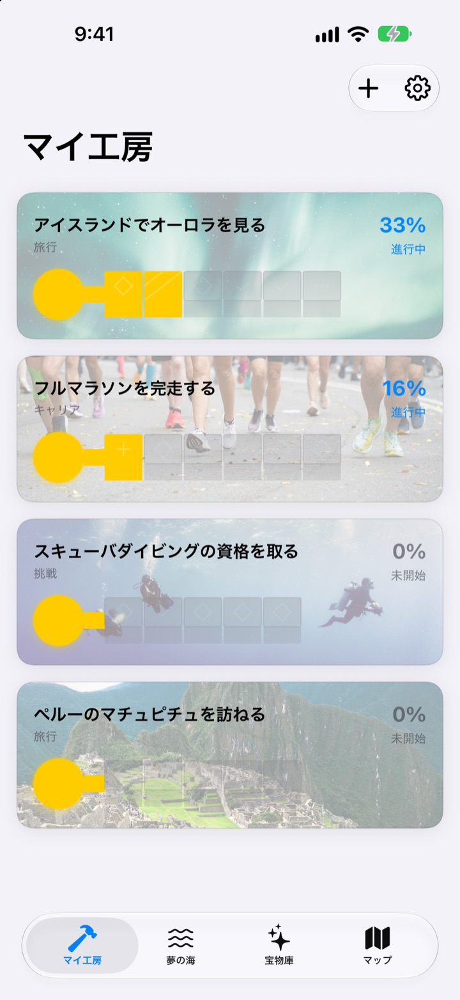
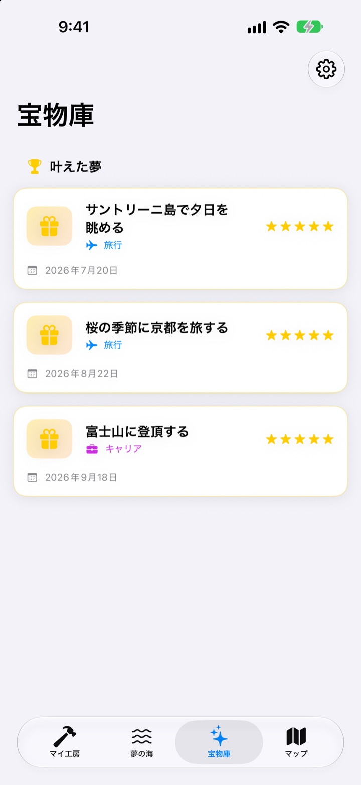

バケットリストを
書いて終わりにしない
夢をひとつ選ぶと、かなえるための小さなステップが鍵の歯になります。今日のステップに答えていくうちに、いつのまにか夢の箱が開きます。
一度購入すればすべての機能が使えます。サブスクも広告もありません。

鍵を完成させてみる
アイスランドのオーロラの夢は、残りあと2ステップ。質問に一行ずつ答えて（空欄でも大丈夫）「次へ」を押すと歯が埋まり、すべて埋まると箱を開けられます。
バケットリストを書いたまま、忘れていませんか？
「オーロラを見る」は大きすぎて、どこから手をつければいいかわからず、何年もリストに残ったまま。夢をさがしては、その夢をシーズンを調べる、予算を貯める、航空券を予約するといった今日できる大きさに分けて、今やるステップをひとつだけ見せます。
590以上の夢から選べます
旅行、経験、達成、健康、学び、人間関係。6つの分野の夢が箱に入って夢の海を漂っています。気に入った箱をマイ工房に持ち帰れば、かなえるためのステップがもう分かれています。
リストにない夢は、タイトルと分野、ステップを書いて自分で作れます。

歯はひとつずつ、今日できる分だけ
マイ工房では、夢ごとに鍵がどこまで完成したかがひと目でわかります。今やるステップがいちばん上にあり、用意された質問に答えると歯がひとつ埋まります。
答えと写真はマイ記録にたまり、進捗タイムラインでこれまでの道のりを振り返れます。

かなえた夢は宝物庫に、行きたい場所はマップに
歯をすべて埋めたら箱を開けましょう。かなえた夢は日付とともに宝物庫にたまり、ひと休み中の夢もそこに置いて、いつでも再開できます。
場所のある夢はマップに集まり、行きたい場所をひと目で見渡せます。

始めるのは3ステップ
- 1
夢を選ぶ
夢の海で箱をタップし、「マイ工房に持ち帰る」を押します。
- 2
今日のステップに答える
いちばん上のステップの質問にひとつずつ答えると、歯が埋まります。
- 3
箱を開ける
歯がすべて埋まると鍵が完成し、夢の箱を開けられます。
夢の海にある6つの分野
- 旅行
- アイスランドでオーロラを見る · サントリーニ島で夕日を眺める
- 体験
- スカイダイビングに挑戦する · パラグライダーを体験する
- 達成
- フルマラソンを完走する · エベレスト・ベースキャンプをトレッキングする
- 健康
- 懸垂20回を達成する · 腹筋を作る
- 学び
- 英語を流暢に話せるようになる · フランス語を流暢に話せるようになる
- 人間関係
- 両親と世界一周旅行をする · 友だちと済州島で1か月暮らす
どの分野にも100近くの夢があります。自分だけの夢は、マイ工房の「新しい夢を追加する」から作れます。
一度の購入ですべて
アプリ本体
- 590以上の夢とステップごとの質問
- 自分だけの夢づくり
- 写真付きのマイ記録と進捗タイムライン
- 宝物庫とマップ
- 夢を育てるモード
- 今後のアップデート
開発者を応援する（任意）
- 役に立ったと思ったら、設定から小さなチップを送れます
- チップで開く機能はありません。送らなくても、すべての機能はそのままです
1回ずつのチップで、サブスクリプションではありません。
アプリ内で別に支払う機能はありません。アカウントも広告もありません。
よくある質問
どうやって始めますか？
夢の海タブで気に入った箱をタップし、「マイ工房に持ち帰る」を押してください。マイ工房で今やるステップの質問に答えると、歯がひとつずつ完成します。すべての歯が埋まると箱を開けられます。
自分の夢を追加できますか？
はい。マイ工房で「新しい夢を追加する」を押し、夢のタイトルと分野、かなえるためのステップを入力してください。
夢をひと休みしたり、再開したりするには？
進行中の夢のメニューで「この夢をあきらめる」を押すと、宝物庫の「ひと休み中の夢」に移ります。そこで「再開」を押せばマイ工房に戻り、「完全に削除」で消すこともできます。
夢を育てるモードとは？
山を登るように夢を管理する画面です。設定 > 表示設定でオン・オフできます。ステップごとの期限や、費用・時間といった障害をプロジェクトのように管理できます。
写真が表示されません。
一部の夢の背景写真はインターネットから読み込みます。インターネットに接続しているか確認してください。接続がないときは標準の画像が表示されます。
新しいiPhoneに記録を移せますか？
記録はアカウントや同期なしで、この端末だけに保存されます。iCloudバックアップやコンピュータのバックアップから新しいiPhoneを復元すると、ほかのアプリのデータと一緒に移ります。
アプリ内で別に支払う機能はありますか？
ありません。アプリを入手すれば、すべての機能が使えます。設定にあるチップは、感謝を伝えたいときだけの任意のものです。
夢や記録がどこかに送られますか？
いいえ。アカウントはなく、広告や分析ツールも使っていません。書いた夢や記録、写真はこの端末だけに保存されます。
問い合わせはどうすればいいですか？
不具合の報告、機能の提案、そのほか何でもお気軽にどうぞ。アプリの設定の「フィードバックを送る」や、InstagramのDM（@lee25_ios）から送れます。
ご質問や不具合はleeo@kakao.comまでお送りください。